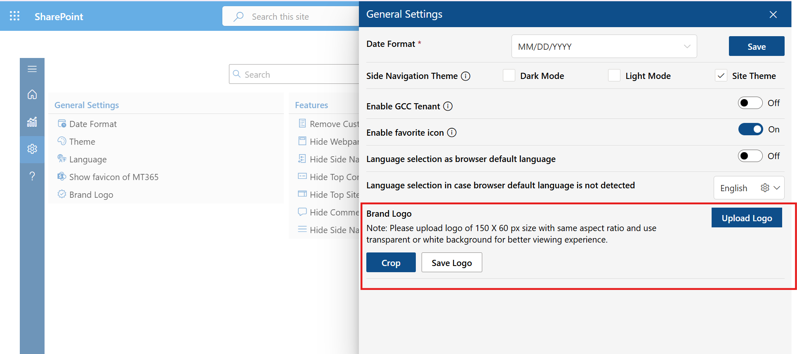
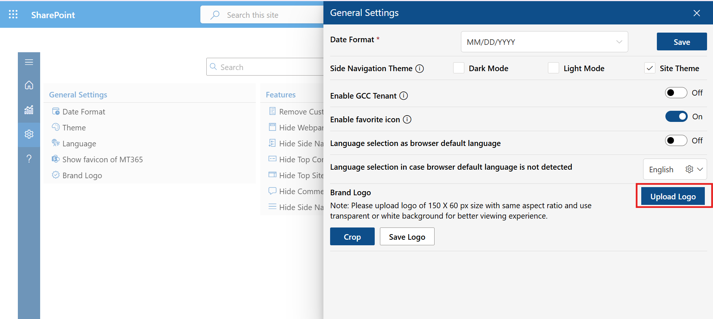
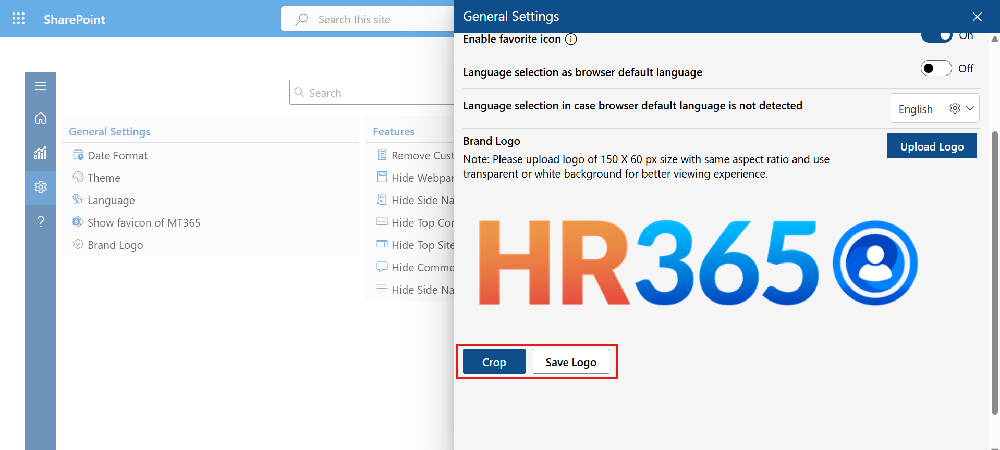
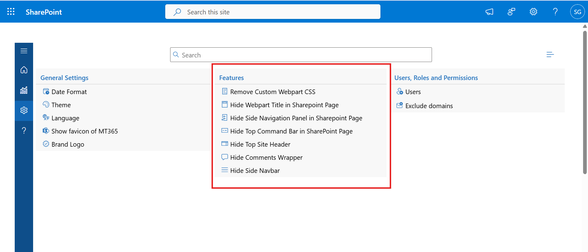

General Settings
- Date Format: Select your preferred format for displaying dates across all reports and screens. The default format is MM/DD/YYYY. Choose the format that matches your organization’s regional standard.
- Enable GCC Tenant: Turn this option On if your organization operates in a Microsoft GCC (Government Community Cloud) environment. Enabling it ensures compatibility with GCC-specific SharePoint URLs and compliance requirements.
- Enable Favorite Icon: Allows the Mail Tracker 365 favicon to appear in the browser tab. When turned On, it helps users easily identify the Mail Tracker workspace among multiple open tabs.
- Language Selection:
Administrators can define language preferences for users in two ways:
- Browser Default Language – Automatically applies the user’s browser language if supported.
- Manual Language Selection – If the browser’s default language isn’t detected, users can manually choose a preferred language from the dropdown (e.g., English, French, Spanish).
- Brand logo:
Here you can add your company logo, which will be displayed at the top of the navigation
bar. From here, the admin can add or update the company logo. The updated logo will
appear at the top of the navigation bar. The recommended size for the logo is 150 X 60,
with the same aspect ratio, and a transparent or white background is recommended for
better visibility and user experience.

Click on the 'Upload Logo' button, then select the logo file. After selecting, the user will have the option to crop the logo, allowing them to adjust the image as needed.

After cropping, the user can click on the 'Save Logo' button. Once saved, the logo will be visible on the top bar.


If the user wants to remove the logo they added and upload a new one, they can click the 'Reset Logo' button.

The General Settings section allows administrators to configure global preferences for Mail Tracker 365, including date format, side navigation theme, tenant settings, favorite icon visibility, language options, and company branding.